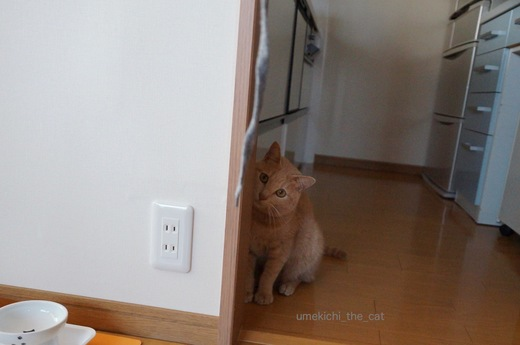
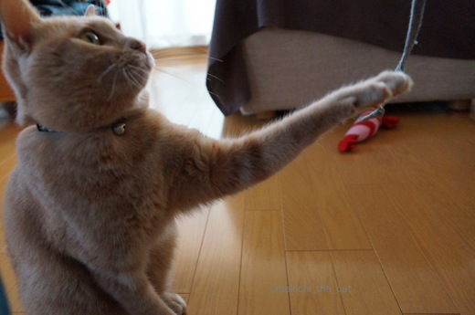
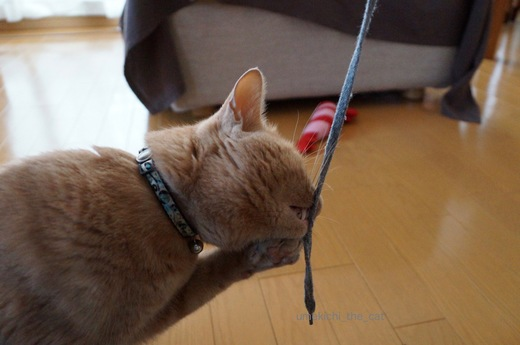
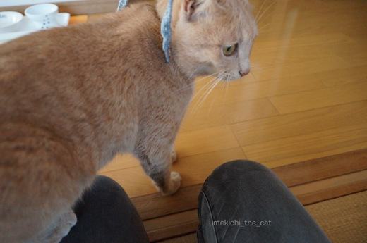

狼藉のお身拭い [梅吉]
師走になったことだしぼちぼちと大掃除中のちぃ家です。
本日は３仏体のお身拭いを。
弥勒菩薩を脇侍扱いなんて！というご批判はご容赦ください。
だって、バランスが大切ですもの。
細かいホコリを拭おうかと思っていたら・・・・
![[猫]](https://blog.ss-blog.jp/_images_e/101.gif) こんにちは〜わしきたで〜
こんにちは〜わしきたで〜
て、ぎょうさんあんねんな
阿修羅： ちょっ、わ〜やめてんかーーー
弥勒菩薩金：えっ、つ、次うちなん？![[あせあせ（飛び散る汗）]](https://blog.ss-blog.jp/_images_e/162.gif) どきどきどきどき・・・
どきどきどきどき・・・
あ、こんひともおったわ。がぶ〜っ
弥勒菩薩黒：きゃ〜〜〜〜
弥勒金：阿修羅はん、弥勒黒はん、無事か？無事なんかー？
収拾がつかなくなったので撤収。
傷心の３物体はちゃんとお掃除して定位置に戻っていただきましたよ。
弥勒黒：頭取れるんちゃうかと思ったわ。
弥勒金：みんなひどい目にあったなぁ・・・
阿修羅：梅吉も乱暴もんやけど、あんなところで掃除しようっちゅう
あのおばちゃんがいっちゃん悪いんちゃうか？
ひそひそひそひそ・・・・・・
 ↑ガブッと一押し↑
↑ガブッと一押し↑
本日は３仏体のお身拭いを。
弥勒菩薩を脇侍扱いなんて！というご批判はご容赦ください。
だって、バランスが大切ですもの。
細かいホコリを拭おうかと思っていたら・・・・
阿修羅： ちょっ、わ〜やめてんかーーー
弥勒菩薩金：えっ、つ、次うちなん？
弥勒菩薩黒：きゃ〜〜〜〜
弥勒金：阿修羅はん、弥勒黒はん、無事か？無事なんかー？
収拾がつかなくなったので撤収。
傷心の３物体はちゃんとお掃除して定位置に戻っていただきましたよ。
弥勒黒：頭取れるんちゃうかと思ったわ。
弥勒金：みんなひどい目にあったなぁ・・・
阿修羅：梅吉も乱暴もんやけど、あんなところで掃除しようっちゅう
あのおばちゃんがいっちゃん悪いんちゃうか？
ひそひそひそひそ・・・・・・
見守り？監視？ー梅吉お仕事編ー [梅吉]
意思表示が痛い・・・ [梅吉]
おかーさんのパジャマから強奪したひもで遊びたい梅吉さん。



すか〜




やんちゃなくせにちょっとどんくさい梅吉さんでした。
最後の写真、ひもを追いかけてひざに乗ってきたな〜と思ったら太ももにタックルされました。
先日は立ち仕事をしていたら足元におもちゃを持ってきて遊ぶと見せかけて足をがぶがぶけりけり・・・
なんだか絡んでくるんですよ。
遊んで欲しいのはわかるけど痛くない方法で意思表示をして欲しいなぁ。
更におとーさん、おかーさんは爪とぎ！という事にも気づいたようでデニムにバリバリバリバリ。
ボロボロになるからやめて〜涙
梅吉サクセスストーリー [梅吉]
寒空の下、少年（猫）がマッチを売っていました。

さむいわ〜
まっちこうてんか〜・・・・まっちこうてや〜・・・・
「おうおう、かわええこや。マッチはおっちゃんが買うたる。
それからうちの子にならへんか？」
わ、わしが・・・？
こうして少年（猫）はあっという間に幸せになりましたとさ。
そんなこともあったなぁ・・・
ちょっと違うような気もするけど・・・・(ΦωΦ)
梅吉が猫の保護活動をしているNPO法人の方に保護されて家にやってくるまでの経緯は
分かっていますが、母猫とはぐれてから保護されるまでのことは全くわかりません。
どのくらいの期間どうして過ごしていたんだろうと時々話題になります。
人を全く怖がらず警戒心も皆無な様子をみると、
一人ぼっちの期間も人に意地悪されたりする事がなかったのだと思われます。
出会った人がみんな優しかったんだね。よかったよかった。
↑ガブッと一押し↑

「おうおう、かわええこや。マッチはおっちゃんが買うたる。
それからうちの子にならへんか？」
こうして少年（猫）はあっという間に幸せになりましたとさ。
ちょっと違うような気もするけど・・・・(ΦωΦ)
梅吉が猫の保護活動をしているNPO法人の方に保護されて家にやってくるまでの経緯は
分かっていますが、母猫とはぐれてから保護されるまでのことは全くわかりません。
どのくらいの期間どうして過ごしていたんだろうと時々話題になります。
人を全く怖がらず警戒心も皆無な様子をみると、
一人ぼっちの期間も人に意地悪されたりする事がなかったのだと思われます。
出会った人がみんな優しかったんだね。よかったよかった。
くつろぎのポーズ [梅吉]
おとーさんのおひざでくつろぐ梅吉さん。
でも首が辛そうなんですけど〜。
そのポーズもけっして楽そうではないですけど。
でもとっても幸せそうな梅吉さんでした＾＾
↑ガブッと一押し↑

でも首が辛そうなんですけど〜。

そのポーズもけっして楽そうではないですけど。
でもとっても幸せそうな梅吉さんでした＾＾
梅吉ダイエット2ヶ月 [梅吉]
梅吉のダイエットも2ヶ月目。
今朝は恒例の体重測定でした。
最初は興味津々だった体重計も今では「またぁ？」って感じの視線(⌒-⌒;
あの手この手で興味を引くと
しゃーないなぁ・・・・のっそり・・・・
ちんまり
背中に寝癖がついていますよw
そして、ディスプレイの数字が見えるでしょうか！
じゃじゃ〜〜ん！4780gです！！去り際のあんよが良いね！！！
先月が4980gだったので200gの減量です。
体重が落ちる量は減りましたがもうだいぶ余分な脂肪が落ちているのでこんなものでしょうか。
目標体重は4650g、あと130g。
梅吉さん今月もがんばりましたね＾＾えらいぞ〜。
体重計に乗せるのに使ったのはスーパーボール。
わしはこんなものにだまされてしもた・・・の大後悔顔です。笑
↑ガブッと一押し↑
今朝は恒例の体重測定でした。

最初は興味津々だった体重計も今では「またぁ？」って感じの視線(⌒-⌒;

あの手この手で興味を引くと

背中に寝癖がついていますよw
そして、ディスプレイの数字が見えるでしょうか！

じゃじゃ〜〜ん！4780gです！！去り際のあんよが良いね！！！
先月が4980gだったので200gの減量です。
体重が落ちる量は減りましたがもうだいぶ余分な脂肪が落ちているのでこんなものでしょうか。
目標体重は4650g、あと130g。
梅吉さん今月もがんばりましたね＾＾えらいぞ〜。

体重計に乗せるのに使ったのはスーパーボール。
わしはこんなものにだまされてしもた・・・の大後悔顔です。笑
しっぽの扱い [梅吉]
梅吉さんは自らはじゃけんにしっぽを扱うくせに、ブラッシングをすると
こんな顔して怒るんですよ。そんなに怒らなくってもいいじゃない。
自分ではガブガブするくせに。
じゃけんに扱いもするけれど
普段はこんな風にきっちり体に寄せて先端はくるっとw
梅吉さんにとってしっぽってどんな存在なんだろう・・・
↑ガブッと一押し↑

こんな顔して怒るんですよ。そんなに怒らなくってもいいじゃない。
自分ではガブガブするくせに。

じゃけんに扱いもするけれど
普段はこんな風にきっちり体に寄せて先端はくるっとw
梅吉さんにとってしっぽってどんな存在なんだろう・・・
ぬくい空気と梅吉は高いところに [梅吉]
夏場は見向きもしなかった高いところにあるベッドに入る梅吉さん。

あほちゃうで ここはくうきがぬくいんやで
そうですね、そうですね。梅吉さんは物事がよくお分かりですね〜＾＾

あちこちお手入れをして

ひと心地ついたら

トロトロ眠くなった梅吉さんでした(≧▽≦)

至福の寝顔をもう一枚。ここはゆたんぽが仕込んであります！
本気で眠いときはちゃんと暖かいところに。生活の知恵www
↑ガブッと一押し↑
そうですね、そうですね。梅吉さんは物事がよくお分かりですね〜＾＾
あちこちお手入れをして
ひと心地ついたら
トロトロ眠くなった梅吉さんでした(≧▽≦)
至福の寝顔をもう一枚。ここはゆたんぽが仕込んであります！
本気で眠いときはちゃんと暖かいところに。生活の知恵www
まだまだおこちゃま [梅吉]
子猫が自分のしっぽにじゃれついてぐるぐる回る遊び。
１歳７ヶ月の梅吉さんは時々ですがまだこの遊びをします。
子猫の場合は可愛らしいですがいい加減成猫の梅吉さんがやると迫力大。
この日も・・・・
なんや、めざわりなやっちゃな〜
ほらほら、梅吉さんこれはなんですか？
うっとおしいわ！いっつもわしのうしろにおって！！
がぶやがぶ！！

きょうこそはっきりいうたるっ

ついてこんといてや！！

あいついななったやろか・・・
まだまだおこちゃまの梅吉さん。目やにはご愛嬌です。汗
↑ガブッと一押し↑
１歳７ヶ月の梅吉さんは時々ですがまだこの遊びをします。
子猫の場合は可愛らしいですがいい加減成猫の梅吉さんがやると迫力大。
この日も・・・・


ほらほら、梅吉さんこれはなんですか？
まだまだおこちゃまの梅吉さん。目やにはご愛嬌です。汗
おかーさんの物はわしの物２ [梅吉]

カフェオレ色の梅吉

梅吉 2023年8月10日 永眠


梅吉と出会った譲渡会

犬猫の理由なき殺処分ゼロ
妄想広告
UMEKICHI 光

爆発的に早い！
時々攻撃的！
Thanks to Mr.Boss365
爆発的に早い！
時々攻撃的！
Thanks to Mr.Boss365